Newest first
Changelog
What changed in each release of Jadual on Google Play. Updates arrive through Google Play like any other app.
1.3.1 (30)
27 October 2026 · includes 1.3.0 (29)
- Arang (Pro): a minimal black theme with soft white ink, no grid and Inter Tight headings. It is in the Papers group and in the wallpaper maker's paper list.
- What's new (free): after an update, a card at the top of Today says what changed. See opens the notes, and Settings, What's new, opens them any time.
- Recently deleted (free): a deleted note is kept for 30 days and can be restored from the foot of the Notes list.
- Sort notes (UI enhancement): a Sort chip orders notes by date, last edited or title. Hold a pinned note to move it up or down among the pinned ones.
- Share a note (Pro): the Share icon in a note sends it as numbered pictures in the current theme, cut into pages that fit a chat.
- Sketches and diagrams go under the line you are writing on, and text joins back up when a photo, sketch or diagram is moved away or deleted.
- Dark papers (fix, 1.3.1): subject and activity names on the Activities list and in a Week sheet are readable again on Arang, Graph dark and the other dark papers.
1.2.1 (28)
27 October 2026 · includes 1.1.9 (26) and 1.2.0 (27)
See it in one picture: English · Bahasa Melayu · Bahasa Indonesia
- Photos in notes (Pro): the Photo button in a note adds a photo from the camera or the gallery. It goes under the line you are writing, opens full screen with pinch to zoom, and can be dragged between any two lines, with a dashed bar showing where it will land. Up to 20 photos a note. Photos are in the Export file and are left out of Android's cloud backup.
- Search (Pro): a search field above the filters on the Notes tab. Notes that do not match fold away, the matching letters turn yellow, and a match inside the text shows its line.
- Templates (Pro): + Template, next to + Text, + Sketch and + Diagram, starts a note from Lecture, Revision or Meeting with the headings already in place.
- Notes tips (Pro): three short tips the first time Notes is opened. Settings, Show tips again, brings them back.
- Nested lists (UI enhancement): bullets, numbers and to-dos go up to three levels deep. Indent and Outdent sit in the List strip, Tab works on a keyboard, and numbers count again under each parent.
- Pasting markdown (UI enhancement): bullets, numbered lists, checkboxes, headings, indents, bold, italic and strikethrough arrive formatted.
- Auto backup (free): in Settings, Data, pick a folder and Jadual saves your timetable, notes and photos there after a change when you leave the app, at most once an hour, one file per semester, with the last copy kept beside it. Back up now, Send a copy and Open the folder are on the same sheet. Nothing leaves the phone and there is no account.
- Photo placement (fix, 1.2.1): a new photo goes under the line the cursor is on, and a dragged photo drops where the bar shows.
1.2.1 in one picture · English

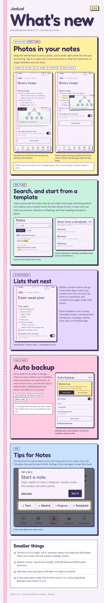
1.2.1 dalam satu gambar · Bahasa Melayu

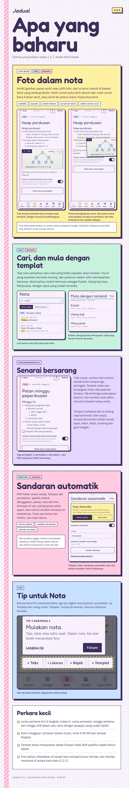
1.2.1 dalam satu gambar · Bahasa Indonesia

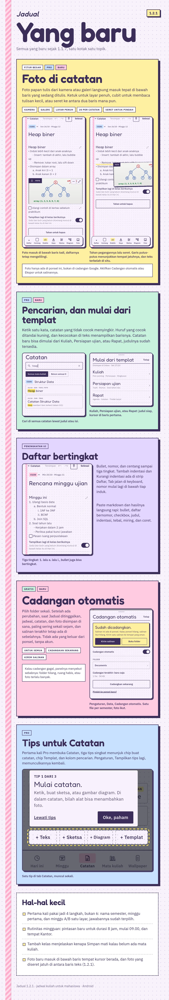
1.1.8 (25)
21 October 2026
- First run (UI enhancement): the semester name, the first week and the A/B weeks question are now one screen with the answers already chosen, so typing your own timetable takes 4 steps instead of 6. Change only what is wrong.
- Weekly routine setup (UI enhancement): the length step has an 8 hours option for a work day, the start times include 9:00 AM, and Office is a one-tap place. The intro examples now show a meeting and the gym next to a class, and the final screen shows a check mark instead of the A+.
- Add class (fix): when Save is off, the line under the form now says a subject (or an activity name) is needed.
- Look around (fix): the first-run card now says the example timetable can be cleared any time.
- Tips (fix): clearer wording on the Week and Activities tips in English, Malay and Indonesian.
- Reviews: the Google Play rating prompt also appears once you have opened Jadual on three different days.
1.1.7 (24)
19 October 2026 · includes 1.1.7 (23)
See it in one picture: English · Bahasa Melayu · Bahasa Indonesia
- One-time events (weekly routine): tap + then Event to add a meeting, an appointment or anything that happens once, on any date. It shows on Today and Week on that date only, and on the widgets and the wallpaper, and it gets a reminder like a class does.
- Week paging (UI enhancement): arrows move the Week screen to the previous or next week, and a calendar icon brings you back to this week. Weeks and days that are over are dimmed.
- Month jumper (UI enhancement): tap the month name on Week to open the month, with a dot on every day that has an event. Tap a day to open its week.
- Phone calendar (Pro): turn it on in Settings to show events from the calendars you tick, public holidays included, on Today, Week, the widgets and the wallpaper. Jadual only reads them, on your phone, and never changes a calendar or sends anything anywhere. Items from a calendar look grey with a small calendar mark, so they never pass for your own subjects, and all-day items such as holidays show as a label under the date.
- Busy days (fix): classes that overlap sit side by side in the Week widget and the Week wallpaper, and the hours for a day count overlapping times once.
- Pro sheet (fix): it said All three widgets, and now says twelve and lists the Phone calendar.
1.1.7 in one picture · English

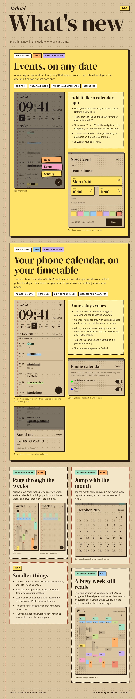
1.1.7 dalam satu gambar · Bahasa Melayu

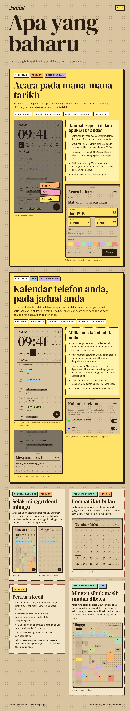
1.1.7 dalam satu gambar · Bahasa Indonesia

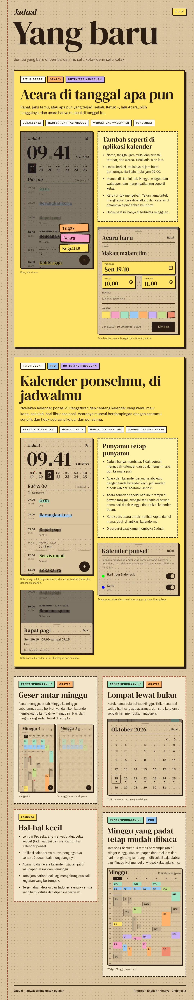
1.1.6 (22)
18 October 2026 · includes 1.1.5 (21)
See it in one picture: English · Bahasa Melayu · Bahasa Indonesia
- Notes on every exam (Pro): the Exams screen now shows the notes of each exam's subject right under it, the first two with a count of the rest and See all. An exam with no notes has a dashed line that adds the first one, already filed under that subject. A past exam keeps one quiet line.
- Nine new widgets (Pro): Next exam (2 by 2), Exam strip (4 by 1), Exams (the next three, 4 by 2), Due (open assignments, past due in red), To-do (open to-dos from your notes, by subject), Latest notes (pinned first), Revise (your next exam and the notes for its subject), Pinned note (2 by 2) and Quick note (4 by 1, whose three buttons start a text, sketch or diagram note). Tapping an exam widget opens Exams and a notes widget opens Notes. They follow your paper, chalk and pen lines included. Today stays the only free widget.
- Take the note now, pick the subject later (Pro): a new note opens straight into your Inbox with nothing to decide first. The chip at the top files it when you are ready: the class on now comes first, and No subject puts it back in the Inbox. Deleting a subject that has notes asks whether to keep them in the Inbox or delete them too, and undo brings both back.
- Notes on phones (Pro): Notes is a tab on phones now, with + Text, + Sketch and + Diagram. On the free plan it opens your notes dimmed with a Pro card, so after a subscription ends you can see they are still there.
- Notes editor (UI enhancement): the editor and its tools now sit above the keyboard, so the line you are typing is never hidden, in the text card and in the sketch and diagram editors. Ticking a to-do no longer opens the keyboard.
- Papan Menu and Ulangkaji (UI enhancement, Pro): Papan Menu now writes in Fredericka the Great and marks each subject with a chalk line in its colour. Ulangkaji moves to a handwritten face with a pen underline, because the old thin letters were hard to read on its dark page. Lists, Today, widgets and the wallpaper all follow.
- The Wallpaper tab held upright (UI enhancement): the preview sits on top and Wallpaper customization below at full width, with Set as wallpaper, Save image and Share always at the bottom. The text under the preview never runs under the options, whatever the text size or navigation bar. Save image and Share keep their labels on one line in Indonesian.
- Weekly routine (UI enhancement): the Week header now says Week 3 with the month under it instead of a date range.
- Fixed: a long place, like Starbucks Anywhere, no longer runs into the countdown on the Next class widget.
1.1.1 to 1.1.6 in one picture · English

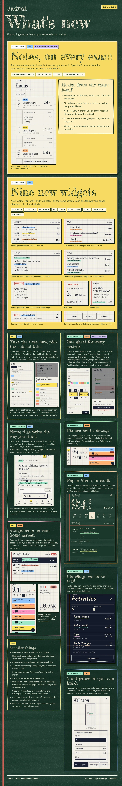
1.1.1 hingga 1.1.6 dalam satu gambar · Bahasa Melayu

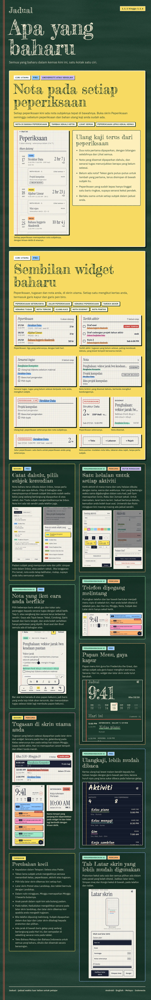
1.1.1 sampai 1.1.6 dalam satu gambar · Bahasa Indonesia

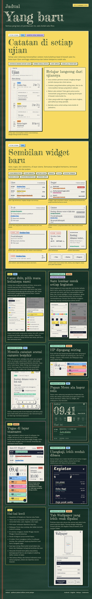
1.1.4 (20)
17 October 2026
- One sheet for a weekly routine activity (UI enhancement): tapping an activity from Today, Week, Activities or the plus menu now opens a single sheet with its name, colour and times, instead of one sheet for the time and another for the name. Days that share the same start, end and place sit together on one card, so opening Gym from Wednesday shows Monday, Wednesday and Friday ticked. Untick a day and save, and the activity is gone from that day every week. Add another time puts a second card on the same activity. On a tablet the sheet has two columns.
- Swipe to delete (UI enhancement): in Activities, swipe a row to the left. Jadual asks first and names the days it will be removed from, and after you confirm, a message at the bottom lets you undo for a few seconds. The hold-to-delete button in the edit sheet is gone.
- Separate timetables (free): University or school and Weekly routine now each keep their own timetable. Switching in Settings, Timetable type, shows the other one as you left it, or starts an empty one. Nothing is copied, so your university subjects no longer show up as activities in a routine. Importing a file of the other type no longer moves the timetable you are using to Past semesters.
- Smaller: the Malay and Indonesian wording of the new sheets, and a hint under the Activities list that you can swipe to delete.
1.1.3 (19)
16 October 2026
- A new layout for phones turned sideways (UI enhancement): the bottom bar becomes a slim menu down the left, with the Jadual mark on top, like on a tablet. It keeps clear of the camera cut-out and of the system buttons, with gesture navigation or the three buttons.
- Today, sideways: the clock, date and week strip take the left side and your day scrolls on the right, so several classes show at once instead of one.
- Week, sideways: the grid keeps the full height, and the menu stays so you can leave the screen without turning the phone back.
- Subjects, sideways: the counts move up beside the title and the list runs in two columns.
- Wallpaper, sideways: the preview takes one half and the options the other half, which scrolls on its own, with Set as wallpaper, Save image and Share always at the bottom.
1.1.2 (18)
16 October 2026 · released together with 1.1.3
- Assignments on your wallpaper and widgets (free): a new Show assignments switch in the Wallpaper tab puts open work on your wallpaper, the Today list and the Next class poster, in portrait and landscape. It shows work due within 7 days and anything overdue, the most urgent first, up to three on the list with a "+ N more" line, and the overdue ones in red. It is off until you turn it on.
- Assignments on the widgets (free): the Today widget has a small badge in the corner with how many things are due, red once one is past due. The Next class widget has a count bubble after NEXT, and the Week widget has a bubble on each day with something due.
- A new Wallpaper tab (UI enhancement): the preview stays one size in the middle of its side, and every option sits in one scrollable panel, Wallpaper customization. Your list, Preset, Background and the switches are no longer hidden below the screen. Set as wallpaper, Save image and Share stay at the bottom. It works the same on phones and tablets.
- Tablet wallpaper (free): on a tablet, a new wallpaper starts in Landscape, so it no longer looks zoomed in on the home screen. In landscape, Position now moves the list: on the lock screen Top sits above the clock and Bottom above the shortcuts, on the home screen all three work. With both screens at once there is only one clear spot, so the choice is hidden.
- Fixed: the wallpaper now redraws when you add, edit or tick off an assignment while Show assignments is on.
- Smaller fixes: a little more air between the Today widget's header and its first class.
1.1.1 (17)
15 October 2026
- Notes you can select across lines (Pro): a note's text is now one piece, so you can drag a selection over several lines and a tool applies to all of them, for example turning a whole paragraph into to-dos in one tap.
- Lists (Pro): List opens two choices, Bullets and Numbers. Type 1. or a dash at the start of a line and it becomes a list on its own, Enter carries it on with the next number or bullet, an empty item ends it, and numbers renumber themselves when you add an item in the middle.
- Text styles (Pro): a new Style button holds Heading, Bold, Italic, Underline and Strikethrough. The styles apply to the text you select, or the whole line if nothing is selected, and they combine with each other and with highlights.
- Highlight colours (Pro): highlight only the words you select, in one of the eight highlighter colours, instead of a whole line. It works inside bullets, to-dos and headings too, and the same colour again takes it off.
- Undo and redo in notes (Pro): two buttons at the top of a note, and in the larger text card, step back and forward through typing, lists, styles and highlights.
- Fixed: the keyboard closed when you typed the first character of a new note.
- Diagrams (Pro): tap an arrow and a delete button appears over it, so you can remove an arrow without touching the shapes. It never showed for arrows before.
- Density (UI enhancement): Settings has a new Density row, Comfortable or Compact. Compact trims the spacing in lists, rows and sheets so more fits on the screen, and the change animates.
- Landscape wallpaper (free): the Wallpaper tab has a new Orientation choice, Portrait or Landscape, with layouts made for a screen held sideways. It also fixes the wallpaper looking zoomed in on a tablet held in landscape. The wallpaper preview is larger on tablets.
- Choose when the wallpaper updates (Pro): the daily update is no longer fixed at 06:00. Pick the time under Update every day.
- Past due (UI enhancement): an assignment whose due time has passed now says Past due with the time it was due (it used to keep saying Due today until midnight), and gets a red PAST DUE tag and a red shadow. Earlier days keep the count, 2 days overdue, and get the tag too. The red is the same in every paper.
- Hold a subject to edit it (UI enhancement): in Add class, Add exam, Add activity and Add assignment, hold a subject chip and its edit sheet opens on top, so a typo can be fixed without closing the sheet. A one-line hint under the chips says so.
- Smaller fixes: a gap under the dark "now" row on Today, and borders around the notes list on tablets.
1.1.0 (16)
15 October 2026
See it in one picture: English · Bahasa Indonesia
- Assignments (free): add homework with a due date, set against a subject or its next class. They sit on Today until you tick them off, with an optional reminder the evening before or two evenings before.
- A colour for every tab (UI enhancement): the tab you are on lights up in its own colour, Today yellow, Week blue, Notes pink, Subjects green, Wallpaper orange, on the phone bar and the tablet rail. Every theme uses its own versions of these colours.
- Due time and custom reminders (free): an assignment, or a weekly routine task, can now have a due date and time (the Choose date & time chip opens the date picker, then the time picker), and Remind me has a Custom choice: any number of minutes, hours or days before it is due, for example 1 hour before.
- Weekly routine (free): the plus now opens a small menu with Activity and Task. A Task is a one-off with a due date and a reminder the evening before, the weekly routine version of an assignment.
- Weekly routine (Pro): the Notes tab and the notes on Today work for weekly routine too, with routine wording (activities instead of subjects).
- On a tablet the Notes tab shows a PRO mark on the free plan, and the Pro screen says your notes are kept while Pro is off.
- Calmer papers (UI enhancement): Graph, Graph dark, Kopitiam, Marmar and Jubin have a fainter background so grey text is easier to read.
- Class notes (Pro): each note is now a page of its own. Type a title and your notes; headings, bullets, to-dos and highlights show as you type, Enter carries a list on, and Backspace takes a mark off before joining lines. Pin a note to keep it at the top of the list. Notes save as you go.
- Sketches in class notes (Pro): add a sketch to a note and draw with a pen, a marker or a line, in four inks, with undo, redo, an eraser that removes whole strokes and a stylus-only mode so a resting palm draws nothing. It opens in a floating card you can drag, zoom and take to full screen.
- Diagrams in class notes (Pro): add a diagram to a note with boxes, round boxes, decisions, ovals and free text, in the highlighter colours. Pull an arrow from the red dot of one shape to another and it follows when you move them. Snap to grid, undo and redo, and a small toolbar over the selected shape to edit its text, colour, duplicate or delete it.
- The notes list is tidier: add a text, sketch or diagram note straight from the top, filter by To do, Sketches or Diagrams, see what each note holds with a thumbnail of its drawing, and notes with every to-do ticked fade. Any text block can open larger in a floating card, and the text tools now float as a rounded bar that suits gesture navigation.
- Class notes on Today: under a class, a "Class notes" card lists that subject's notes, pinned ones first, each with a line of what it says and tags for sketches, diagrams and to-dos still open. Tap a note to open it, or See all for the whole list.
- Export and import now carry assignments, notes and their sketches and diagrams, and can read larger files (up to 32 MB). Files from older versions still import.
- A very large backup (many drawings) is saved as a zip automatically, and notes save the moment you leave the app.
- Add class: Starts and Ends are two labelled boxes that each open the clock, with length chips (50 min, 1 h, 1 h 50, 2 h, 3 h). Week A and Week B only show when A/B weeks is on, which also fixes a Week B class that never appeared with A/B weeks off.
- The plus button on Today and Week now opens three sticky notes: Class, Exam and Assignment. Each opens its add sheet, and the dashed Add assignment row on Today is gone. A weekly routine keeps the plain plus.
- Tablets: the tabs now sit in a rail down the left under the Jadual mark instead of a bar along the bottom, with a new Notes tab (Pro): every note grouped by subject on the left (it folds to a thin strip), the open note on the right, with its text on one side and its sketches and diagrams on the other. On a narrower tablet the list and the note take turns.
- Exams are set by date: pick the day on a calendar that shows the week numbers, instead of a weekday and a week number. Calendar days before the semester or past week 21 are greyed.
- New Exams list: tap the exam strip on Today to see every exam with the time left, and past exams below.
- Exam reminders (Pro): choose any days before, from 1 to 14, instead of only the evening before. A new Reminder time setting (default 20:00) sets when they arrive, and applies to assignment reminders too.
- The exam and assignment strips on Today are now bold cards in the subject colour, with a hard shadow.
- Today: the date reads 15/10 instead of 15.10, the red circle shows the month (OCT) with the week number beside it, and the left margin is narrower. Suggested by a reader on r/indotech.
- Share card: new Share button on the Wallpaper tab turns the layout you picked (Today, Tomorrow, Whole week, Next class) into a 9:16 image with the Jadual wordmark, ready for stories and chats, with the Play link as the caption.
- The Today widget preview in the Android widget picker now shows the current design with end times and rooms.
- A one-time Play review request appears after the second time you set a wallpaper or share a card.
1.1.0 (16) in one picture · English

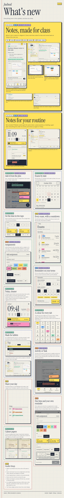
1.1.0 (16) dalam satu gambar · Bahasa Indonesia

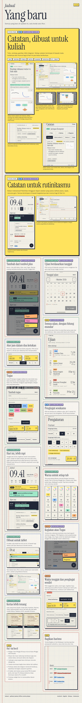
1.0.0 (13)
14 October 2026
- The Today widget now shows each class's end time under its start time, and the room under the subject name. Suggested by a reader on r/indotech.
- Weekly routine: the Today screen, the Today widget and the Week widget no longer show a week number.
- New Wording setting (Settings, Timetable): University or School. School changes Lecturer to Teacher and Lecture to Lesson, with matching words in Malay and Indonesian.
- Settings: the Privacy row opens the privacy policy, and a new row links to Jadual on TikTok.
- The theme picker is now called Jadual Papers.
1.0.0 (11)
13 October 2026
- First release on Google Play.
- Today and Week views, A/B weeks, and a weekly routine for non-students.
- Three widgets: Next class, Today and Week.
- Wallpaper maker for the lock screen and home screen, with an optional redraw every morning.
- Ten papers (themes), two of them free.
- Class reminders, and exams with an evening-before reminder.
- Export and import to a file, and a semester archive.
- English, Bahasa Melayu and Bahasa Indonesia.